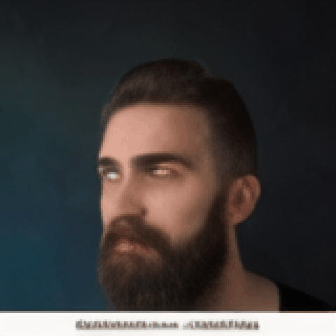

T1: Scaling Diffusion Probabilistic Fields to
High-Resolution on Unified Visual Modalities
CelebV-Text (Visual Comparisons)
More detailed text descriptions are used for inference.Prompt: This person has sideburns and beard. He is wearing goatee. Firstly, he gazes for a short time, and he then gazes for a short time, then he blinks for a short time, he finally blinks for a short time.
VDM
CogVideo

T1 (ours)
Prompt: She has wavy hair and high cheekbones. To begin with, this female talks for a short time, and she then talks for a short time, next she talks for a short time, in the end, she talks for a short time.
VDM
CogVideo
T1 (ours)
Prompt: A male is young. He has a big nose and high cheekbones. The man begins to talks for a short time, then he turns for a moderate time, in the end, he turns for a moderate time.
VDM
CogVideo
T1 (ours)